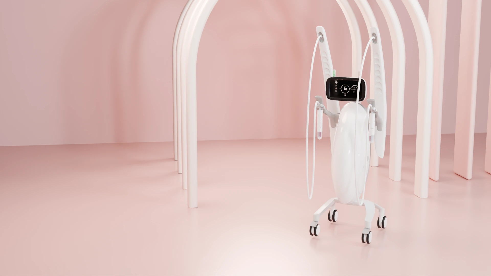
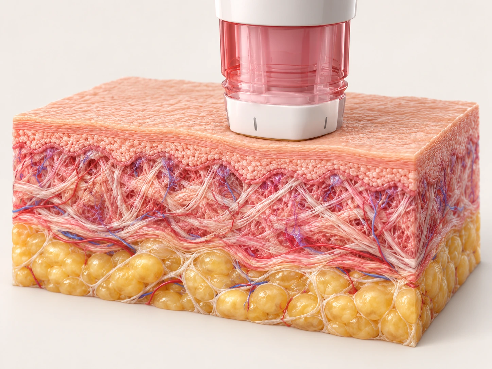
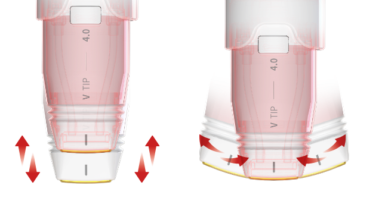
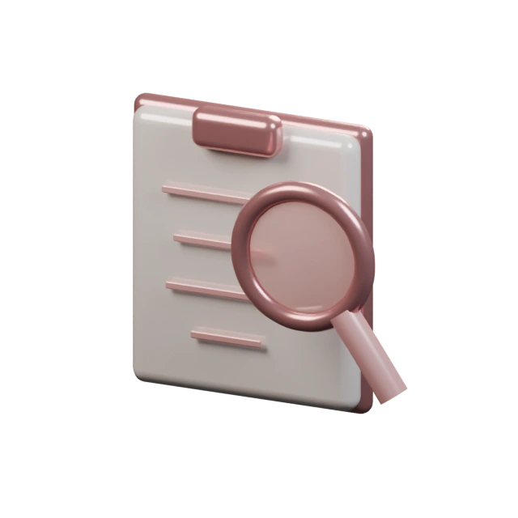
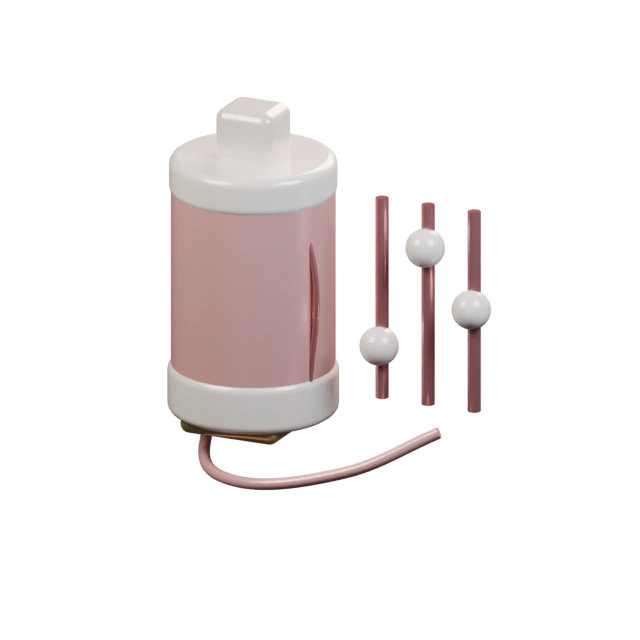
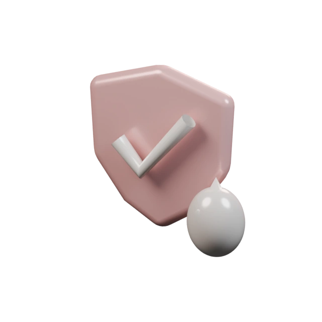

6.78 MHz · MONOPOLAR RF
THE BALANCE OF ENERGY
Heat.
Cool.
Balance.
온기와 쿨링 사이,
나의 피부에 맞는 균형.
볼뉴머는 고주파 에너지를 이용하는 탄력 관리 장비입니다. 피부에 전달하는 열에너지와 접촉면의 쿨링을 함께 살피며 시술을 계획합니다.
같은 얼굴도 피부 두께와 볼륨, 열 자극에 대한 반응은 다릅니다. 부위와 팁, 강도는 진료를 통해 결정합니다.
6.78MHz
모노폴라 고주파
Watercooling
지속적인 접촉 쿨링
Energy, in balance.
피부 속 열에너지와
표면 쿨링을 함께.
고주파 에너지가 열로 전환되는 동안,
팁의 접촉면에서는 수냉식 쿨링이 이어집니다.
THE SCIENCE OF CONTACTVOLNEWMER

피부에 맞닿는 시작
팁을 밀착하고 피부의 전기적 저항을 확인합니다.
이해를 돕는 모식도입니다. 실제 조직의 크기·온도·시술 결과를 나타내지 않습니다.
CONTACT → ENERGY → RESPONSE
밀착부터 피부 반응까지,
한 과정으로 살핍니다.
열에 대한 느낌과 기대할 수 있는 변화는 개인마다 다릅니다. 무통·효과를 보장하는 설명이 아닙니다.
A closer fit.
굴곡을 따라 밀착하고,
접촉면은 쿨링으로.
피부 굴곡에 맞춰 기울어지는 팁과 곡면 접촉부를 사용합니다. 연속적인 수냉식 쿨링과 진동 설정을 살피며 피부 반응에 맞춰 조절합니다.
쿨링을 사용해도 열감이나 통증이 생길 수 있습니다. 불편한 느낌은 시술 중 바로 알려주세요.
CURVED & TILTING TIP

곡면 접촉기울기 조절수냉식 쿨링
Small details.
Personal choices.
부위에 따라 살펴보는 네 가지 팁.
면적과 굴곡이 다른 피부에 맞춰 팁을 선택합니다.
적용 가능 부위와 사용할 팁은 진료 후 안내합니다.
I tip · 작은 면적을 세심하게
작고 섬세한 부위를 고려한 팁입니다. 눈가 등 민감한 부위의 적용 가능 여부와 보호 방법은 진료를 통해 확인합니다.
F tip · 얼굴의 굴곡을 따라
굴곡이 있는 얼굴 부위에 맞춰 살펴보는 팁입니다. 턱선 주변의 피부 두께와 볼륨을 함께 확인합니다.
V tip · 얼굴 탄력을 위한 선택
얼굴 부위에 사용하는 팁입니다. 볼과 얼굴의 피부 상태를 살피고, 샷 수와 강도를 개별적으로 계획합니다.
S tip · 넓은 면적을 고려해
넓은 부위를 고려한 팁입니다. 신체 부위의 적용 여부와 시술 범위는 상담 후 안내합니다.
면적은 제조사 팁 사양입니다. 특정 팁 사용이나 시술 부위를 일괄 보장하지 않습니다.
YOUR SKIN, YOUR BALANCE01 / 03

선택 부위의 상담 포인트
볼의 피부 탄력
피부 두께와 느슨함, 얼굴의 볼륨을 함께 확인합니다.
모델 이미지는 설명용이며 시술 결과를 나타내지 않습니다.
Your skin.
Your balance.
어떤 고민에서
시작하시나요?
고민이 같은 부위라도 계획은 달라질 수 있습니다.
카드를 눌러 상담에서 살펴볼 내용을 확인하세요.
볼륨이 적거나 피부가 얇은 부위는 특히 세심한 상담이 필요합니다. 개인 상태에 따라 다른 관리가 제안될 수 있습니다.
A plan for you.
샷 수보다 먼저,
피부를 이해하는 과정.
- 01

진료와 부위 확인
피부 두께·볼륨·탄력 저하와 이전 시술, 복용 약물 등을 확인합니다.
- 02

팁과 에너지 계획
적용 부위와 팁, 샷 수 및 강도를 결정하고 쿨링과 열감을 함께 살핍니다.
- 03

반응 확인과 관리
시술 후 피부 반응을 확인하고, 개인 상태에 맞는 주의사항과 관리 일정을 안내합니다.
After the warmth.
시술 뒤에도,
피부의 반응을 살펴요.
시술 전, 먼저 알려주세요.
삽입형 전자기기, 임신 여부, 피부 질환·상처, 최근 시술이나 복용 약물 등은 진료 시 알려주세요. 개인 상태에 따라 시술이 제한될 수 있습니다.
붉음과 열감은 개인차가 있습니다.
시술 후 붉음·붓기·열감·통증 등이 생길 수 있으며, 드물게 화상 등 이상 반응이 발생할 수 있습니다. 증상이 심하거나 지속되면 병원으로 연락해 주세요.
무리한 자극을 피하고 관리해 주세요.
보습과 자외선 차단을 유지하고, 강한 열이나 마찰을 주는 행동은 병원에서 안내한 기간 동안 피해주세요.
시술 후 문의 02-336-7511 ↗Questions?
Let’s talk.
볼뉴머,
궁금한 점을 확인하세요.
나에게 적용할 수 있는지는
진료를 통해 안내합니다.
볼뉴머는 어떤 방식의 시술인가요?
6.78MHz 모노폴라 고주파를 이용하는 시술입니다. 피부에 접촉한 팁을 통해 전기 에너지를 전달하고, 조직의 저항에 의해 열이 발생하는 원리를 사용합니다. 적용 범위와 설정은 진료 후 결정합니다.
초음파 리프팅과 어떻게 다른가요?
볼뉴머는 고주파를, 슈링크유니버스 등은 집속초음파를 사용합니다. 에너지가 전달되는 방식과 시술 목적이 다르므로 피부 상태와 고민을 살펴 적합한 방법을 상담합니다.
쿨링이 있으면 통증이 없나요?
수냉식 쿨링과 진동 설정을 활용하지만 열감이나 통증이 없다는 뜻은 아닙니다. 개인의 민감도와 부위에 따라 느낌이 다르며, 마취 여부와 설정은 진료 시 안내합니다.
어떤 팁을 사용하게 되나요?
팁마다 접촉 면적과 적용을 고려하는 부위가 다릅니다. 원하는 부위의 피부 두께와 굴곡을 확인한 뒤 사용할 팁을 결정합니다. 페이지의 팁 소개가 모든 부위에 대한 시술 가능 안내를 뜻하지는 않습니다.
몇 샷을 받아야 하나요?
모든 사람에게 같은 샷 수를 적용하지 않습니다. 시술 범위, 피부 상태, 이전 시술 등을 확인한 뒤 적정 샷 수와 에너지 설정을 계획합니다.
시술 시간은 얼마나 걸리나요?
적용 부위와 샷 수, 준비 과정에 따라 달라집니다. 상담·마취 여부 등을 포함한 예상 소요 시간은 예약과 진료 시 안내합니다.
변화는 언제부터 느끼고 얼마나 유지되나요?
변화를 느끼는 시점과 정도, 유지 기간에는 개인차가 있습니다. 피부 상태와 경과를 살펴 관리 시점과 간격을 상담하며, 즉각적인 변화나 일정한 유지 기간을 보장하지 않습니다.
시술 후 바로 일상생활이 가능한가요?
피부 반응에 따라 다릅니다. 붉음·붓기·열감 등이 생길 수 있어 병원에서 안내한 관리 방법을 따라주세요. 증상이 심해지거나 지속되면 병원에 문의해 주세요.
다른 리프팅 시술과 함께 받을 수 있나요?
고주파와 초음파 등 서로 다른 방식의 관리를 함께 고려할 수 있지만, 병행 여부와 순서·간격은 피부 상태와 기존 시술 이력을 확인한 뒤 결정합니다.
Explore your options.
함께 알아보는 리프팅·탄력 관리.
각 시술의 목적을 비교하고 나에게 필요한 관리를 상담하세요.
병행 여부와 시술 순서·간격은 진료 후 결정합니다.
장비 설명 참고: CLASSYS 볼뉴머 공식 자료. 장비의 원리·팁 구성에 대한 설명이며 개인의 시술 효과를 보장하지 않습니다.
이달의 이벤트
나에게 맞는 이벤트를 펼쳐보세요.


A moment for yourself.
나를 돌보는 시간,
볼뉴머 상담부터.
홍대·합정 뷰티블라썸의원
피부 고민과 지금까지 받은 시술을 함께 알려주세요.